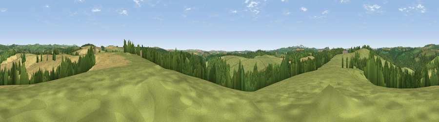

Viewpoint near East Taphouse
#16303 in England · top 33% of its area beats it · near East TaphouseWhere it is
The exact computed spot (SX 14025 63375). Click the marker for map links.
The view, rendered

A 360° render of this exact spot computed from the terrain model, tree cover and land cover — summer colours, afternoon light, calibrated against photographs of famous viewpoints. Real trees, hedges and buildings will differ in detail.
The panorama
Grey silhouette: terrain skyline in each direction (720 bearings, Earth curvature and refraction included). Dashed green: skyline with trees (+15 m) and buildings (+8 m) as obstacles. Blue strip: how far the ground is visible on each bearing.
Where the view opens
Wedge length = distance to the farthest visible ground on that bearing (vegetation-aware). Rings at 10, 25 and 50 km.
What fills the view
53% grassland · 27% cropland · 20% woodland
Angular shares of the visible panorama (visual magnitude), not map area. Landscape diversity 0.45 (0–1 Shannon).
Key numbers
More beautiful places nearby
The staircase of upgrades: each row has a higher view potential than everything closer. Driving times are estimates from straight-line distance, calibrated against real road routing — check an actual route before setting out.
| Place | Direction | Drive | Score |
|---|---|---|---|
| Viewpoint near Cardinham | WNW · 2 km | ~5 min | 58.0 |
| Viewpoint near East Taphouse | E · 3 km | ~7 min | 58.2 |
| Viewpoint near Lostwithiel | WSW · 5 km | ~12 min | 68.6 |
| Viewpoint near Lanlivery | WSW · 6 km | ~13 min | 72.0 |
| Viewpoint near Lanreath | SE · 7 km | ~14 min | 75.7 |
| Viewpoint near Polruan | S · 12 km | ~23 min | 79.4 |
| Pencarrow Head | S · 12 km | ~23 min | 86.0 |
| Viewpoint near Stenalees | WSW · 15 km | ~27 min | 88.0 |
50.44068, -4.62045 · source: screening · position refined by local search. Computed location — check access rights before visiting.